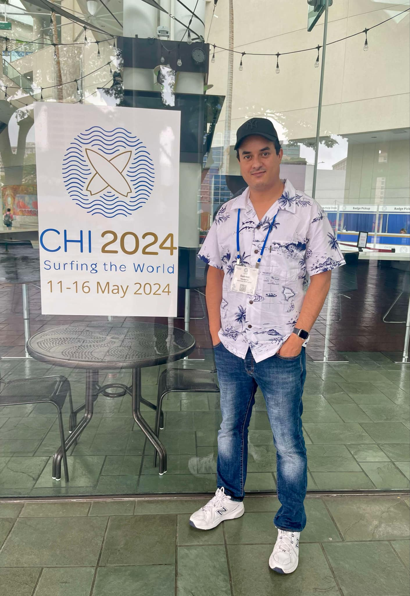

I am a Postdoctoral Scholar in Department of Medicine at the University of California, San Francisco (UCSF), conducting research at the UCSF TECH Lab under the mentorship of Dr. Peter Washington. My work focuses on mobile health, wearables, human-computer interaction, and AI-driven mental health interventions. I develop multimodal AI systems that integrate wearable biosignals and behavioral data to enable real-time detection and personalized interventions for mental health conditions such as stress, anxiety, and depression, with a particular focus on integrating large language models (LLMs) with wearable technology.
Previously, I completed my Ph.D. in Computer Science at the University of Memphis, where I conducted research under the mentorship of Dr. Santosh Kumar at the mDOT Center, focusing on wearable-based stress sensing and AI-driven intervention systems. I have led studies such as the RELIEF Study, which evaluates the effectiveness of wearable-integrated LLM chatbots for stress management, and the MOODS Study, which demonstrated how AI-driven momentary stressors and reflective visualizations can reduce stress and promote behavior change. My expertise spans machine learning, deep learning, NLP, and data visualization, with a focus on designing intelligent, user-centric health technologies.
Previously, I worked as a Senior Software Engineer at OpenText, where I contributed to enterprise-level medical records software, developing scalable solutions for healthcare data processing. My academic journey has been shaped by a strong commitment to AI-driven health innovation, inspired by my roots in rural Nepal, where mental health remains highly stigmatized. I am committed to advancing AI for mental health and making stress management more accessible, adaptive, and impactful.
Beyond research, I enjoy sports, hiking, camping, and watching documentaries. I am also actively involved in mentorship and community engagement, including organizing science exhibitions and cultural events to inspire the next generation of researchers.
A brief journey through my academic and professional path.
Developing multimodal, self-supervised AI models that integrate wearable biosignals and behavioral data for real-time detection of depression and anxiety, human-in-the-loop AI for ADHD/ASD assessment, and just-in-time adaptive interventions.
Led wearable-based stress sensing studies including the MOODS Study (CHI'24) and RELIEF Study (CHI-EA'25), developing AI-driven interventions, LLM chatbots, and interactive visualizations for stress management.
Developed enterprise-level medical records image capture and retrieval software for major healthcare organizations, and mentored a team of software interns.
Graduated with a Mahatma Gandhi Scholarship for Bachelor's Degree from the Ministry of External Affairs, India.